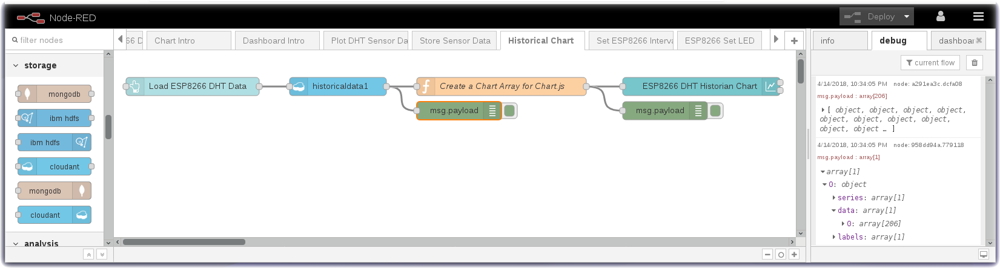
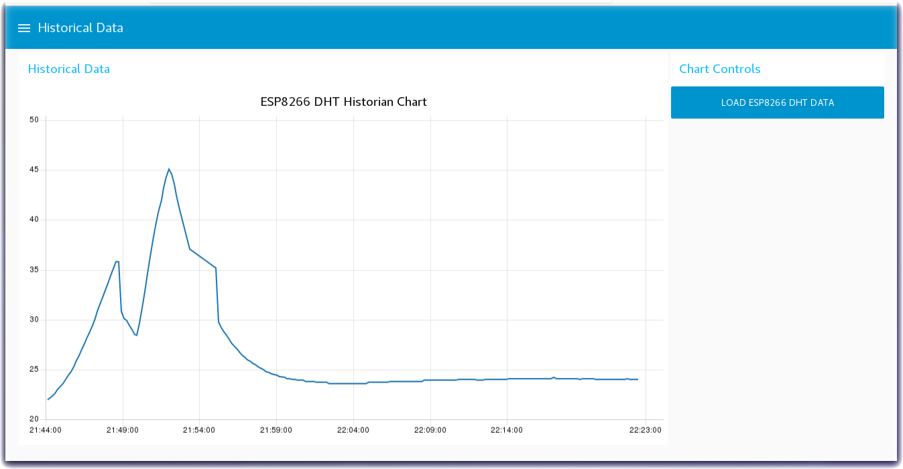

Node-RED Charts of Historical Sensor Data¶
Lab Objectives¶
In this lab you will read the historical sensor data from a Cloud storage database and create a graph of prior readings. You will learn:
- How to read datasets from a Cloudant database
- How to create a chart of historical data
Introduction¶
The previous section stored the Device environment sensor data into a Cloudant DB. This section will read the historical sensor data from a Cloud storage database and create a graph of prior readings.
Step 1 - Import the Node-RED Historian Chart Flow¶
- Open the “Get the Code” github URL listed below, mark or Ctrl-A to select all of the text, and copy the text for the flow to your Clipboard. Recall from a previous section, click on the Node-RED Menu, then Import, then Clipboard. Paste the text of the flow into the Import nodes dialog and press the red Import button.
Node-RED Historian Chart Flow : Get the Code
- Click on the Cloudant node on the Historical Chart flow to confirm that it is configured to your IoT Platform Cloudant service instance.
- Click the Deploy button on the top of menu bar to deploy the Node-RED flow.
Step 2 - Graph Historical IoT Sensor data stored in a database using Node-RED¶
- The Historical Chart flow reads the IoT Sensor Device data from the Cloudant database and formats it into a Chart array before sending the data to a Node-RED Chart node.

Step 3 - Historian Charts of Device Environmental Sensor data¶
- Turn to the Node-RED Dashboard browser tab, click on the menu tab in the upper left corner, and select the Historical Data tab.
- On the Historical Data dashboard, click on the LOAD ESP8266 DHT DATA button to start the data visualization.
- The button will trigger the read of the historian DB records created in the previous section.
- In the Create a Chart Array for Chart.js function node the time series temperature data from the Device Environmental sensor is formatted into a Chart Array and sorted chronologically.
- The Chart Array is passed to the Node-RED Chart node to render the graph.
